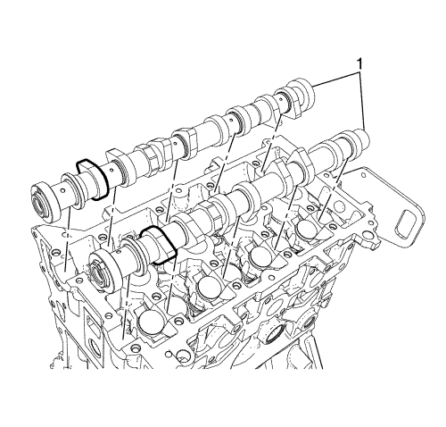
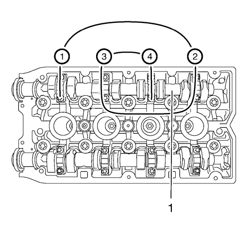

- Monte el árbol de levas (1).
- Coloque los lóbulos del árbol de levas en una posición neutra.

Nota: Observe la marca de identificación en la tapa de cojinete del árbol de levas.
- Monte los 4 sombreretes de cojinete del árbol de levas de admisión, con los números 2-5, de la culata.
Precaución: Consulte Precaución con las fijaciones en la sección Prólogo
- Apriete los 8 pernos del sombrerete del cojinete del árbol de levas de admisión, desde el exterior hacia el interior en espiral, en pasos de 1/2 a 1 vuelta, a 10 N·m (89 lib. pulg.).

Nota: Observe la marca de identificación en la tapa de cojinete del árbol de levas.
- Monte los 4 sombreretes de cojinete del árbol de levas de escape con el número 6-9 en la culata.
- Apriete los 8 pernos del sombrerete del cojinete del árbol de levas de escape, desde el exterior hacia el interior en espiral, en pasos de 1/2 a 1 vuelta, a 10 N·m (89 lib. pulg.).
- Limpie las superficies del primer soporte de cojinete del árbol de levas y de la culata con una herramienta adecuada.
- Limpie el conducto de aceite de cualquier residuo de sellador.
- Monte el primero (1) y el pasador de ajuste (3).
- Apriete los pernos (2) del sombrerete del cojinete del árbol de levas a 10 N·m (89 lib. pulg.).